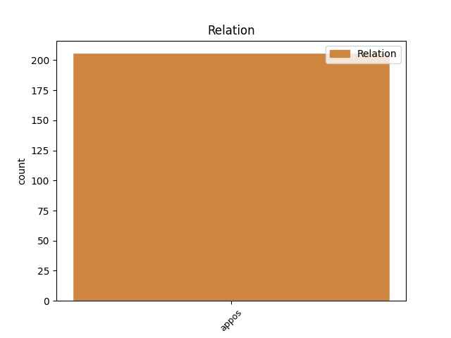
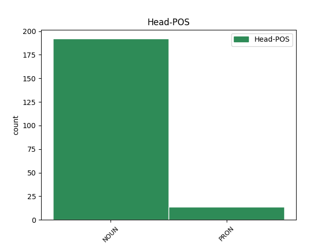
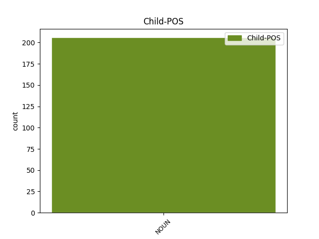

Distribution of features within this leaf



Agreement Rules sorted by frequency.
- When the dependent token is the appositional modifier(appos) of the head token, and the head token is NOUN and the dependent token is NOUN.
1 Lai _ _ _ _ 0 _ _ _
2 varētu _ _ _ _ 0 _ _ _
3 izsekot _ _ _ _ 0 _ _ _
4 verificējamā _ _ _ _ 0 _ _ _
5 procesa _ _ _ _ 0 _ _ _
6 instances _ _ _ _ 0 _ _ _
7 izpildei _ _ _ _ 0 _ _ _
8 , _ _ _ _ 0 _ _ _
9 katrs _ _ _ _ 0 _ _ _
10 no _ _ _ _ 0 _ _ _
11 notikumiem _ _ _ _ 0 _ _ _
12 satur _ _ _ _ 0 _ _ _
13 zināmus _ _ _ _ 0 _ _ _
14 to _ _ _ _ 0 _ _ _
15 identificējošus _ _ _ _ 0 _ _ _
16 parametrus parametrs NOUN ncmpa1 Case=Acc|Gender=Masc|Number=Plur 0 _ _ _
17 , _ _ _ _ 0 _ _ _
18 piemēram _ _ _ _ 0 _ _ _
19 , _ _ _ _ 0 _ _ _
20 faila _ _ _ _ 0 _ _ _
21 nosaukumu nosaukums NOUN ncmsa1 Case=Acc|Gender=Masc|Number=Sing 16 appos _ LvtbNodeId=a-z98-p27s3w21|SpaceAfter=No
22 , _ _ _ _ 0 _ _ _
23 kura _ _ _ _ 0 _ _ _
24 modificēšana _ _ _ _ 0 _ _ _
25 ir _ _ _ _ 0 _ _ _
26 jāpamana _ _ _ _ 0 _ _ _
27 , _ _ _ _ 0 _ _ _
28 vai _ _ _ _ 0 _ _ _
29 tabulas _ _ _ _ 0 _ _ _
30 ieraksta _ _ _ _ 0 _ _ _
31 identifikatoru _ _ _ _ 0 _ _ _
32 ieraksta _ _ _ _ 0 _ _ _
33 dzēšanas _ _ _ _ 0 _ _ _
34 gadījumā _ _ _ _ 0 _ _ _
35 . _ _ _ _ 0 _ _ _
1 Kur _ _ _ _ 0 _ _ _
2 gan _ _ _ _ 0 _ _ _
3 citur _ _ _ _ 0 _ _ _
4 vēl _ _ _ _ 0 _ _ _
5 viņus viņš PRON pp3mpan Case=Acc|Gender=Masc|Number=Plur|Person=3|PronType=Prs 0 _ _ _
6 , _ _ _ _ 0 _ _ _
7 bezdarbniekus bezdarbnieks NOUN ncmpa1 Case=Acc|Gender=Masc|Number=Plur 5 appos _ LvtbNodeId=a-p608-p20s3w7|SpaceAfter=No
8 , _ _ _ _ 0 _ _ _
9 paēdinās _ _ _ _ 0 _ _ _
10 , _ _ _ _ 0 _ _ _
11 dos _ _ _ _ 0 _ _ _
12 iespēju _ _ _ _ 0 _ _ _
13 nomazgāties _ _ _ _ 0 _ _ _
14 , _ _ _ _ 0 _ _ _
15 apģērbties _ _ _ _ 0 _ _ _
16 , _ _ _ _ 0 _ _ _
17 atbalstīs _ _ _ _ 0 _ _ _
18 ar _ _ _ _ 0 _ _ _
19 Dieva _ _ _ _ 0 _ _ _
20 vārdu _ _ _ _ 0 _ _ _
21 . _ _ _ _ 0 _ _ _
Disagree Examples:
1 Arvien _ _ _ _ 0 _ _ _
2 grūtāk _ _ _ _ 0 _ _ _
3 man _ _ _ _ 0 _ _ _
4 nākas _ _ _ _ 0 _ _ _
5 izdomāt _ _ _ _ 0 _ _ _
6 iemeslu iemesls NOUN ncmsa1 Case=Acc|Gender=Masc|Number=Sing 0 _ _ _
7 vakaru _ _ _ _ 0 _ _ _
8 prombūtnei _ _ _ _ 0 _ _ _
9 : _ _ _ _ 0 _ _ _
10 kosmētiskais _ _ _ _ 0 _ _ _
11 kabinets kabinets NOUN ncmsn1 Case=Nom|Gender=Masc|Number=Sing 6 appos _ LvtbNodeId=a-d198-p59s1w11|SpaceAfter=No
12 , _ _ _ _ 0 _ _ _
13 baseins _ _ _ _ 0 _ _ _
14 , _ _ _ _ 0 _ _ _
15 draudzene _ _ _ _ 0 _ _ _
16 , _ _ _ _ 0 _ _ _
17 aerobika _ _ _ _ 0 _ _ _
18 , _ _ _ _ 0 _ _ _
19 bet _ _ _ _ 0 _ _ _
20 viņš _ _ _ _ 0 _ _ _
21 , _ _ _ _ 0 _ _ _
22 liekas _ _ _ _ 0 _ _ _
23 , _ _ _ _ 0 _ _ _
24 to _ _ _ _ 0 _ _ _
25 nepamana _ _ _ _ 0 _ _ _
26 , _ _ _ _ 0 _ _ _
27 viņš _ _ _ _ 0 _ _ _
28 vispār _ _ _ _ 0 _ _ _
29 neko _ _ _ _ 0 _ _ _
30 nepamana _ _ _ _ 0 _ _ _
31 . _ _ _ _ 0 _ _ _
1 Bērnībā _ _ _ _ 0 _ _ _
2 es _ _ _ _ 0 _ _ _
3 bieži _ _ _ _ 0 _ _ _
4 redzēju _ _ _ _ 0 _ _ _
5 eņģeļus eņģelis NOUN ncmpa2 Case=Acc|Gender=Masc|Number=Plur 0 _ _ _
6 , _ _ _ _ 0 _ _ _
7 istabas _ _ _ _ 0 _ _ _
8 stūrī stūris NOUN ncmsl2 Case=Loc|Gender=Masc|Number=Sing 5 appos _ LvtbNodeId=a-d198-p81s1w8
9 pie _ _ _ _ 0 _ _ _
10 griestiem _ _ _ _ 0 _ _ _
11 , _ _ _ _ 0 _ _ _
12 tik _ _ _ _ 0 _ _ _
13 lielus _ _ _ _ 0 _ _ _
14 kā _ _ _ _ 0 _ _ _
15 strazdus _ _ _ _ 0 _ _ _
16 , _ _ _ _ 0 _ _ _
17 fosforescējošus _ _ _ _ 0 _ _ _
18 , _ _ _ _ 0 _ _ _
19 naktīs _ _ _ _ 0 _ _ _
20 pamostoties _ _ _ _ 0 _ _ _
21 . _ _ _ _ 0 _ _ _
1 Gulta _ _ _ _ 0 _ _ _
2 šeit _ _ _ _ 0 _ _ _
3 nav _ _ _ _ 0 _ _ _
4 tāda _ _ _ _ 0 _ _ _
5 kā _ _ _ _ 0 _ _ _
6 reanimācijā _ _ _ _ 0 _ _ _
7 , _ _ _ _ 0 _ _ _
8 gulēt _ _ _ _ 0 _ _ _
9 ir _ _ _ _ 0 _ _ _
10 neērti _ _ _ _ 0 _ _ _
11 , _ _ _ _ 0 _ _ _
12 un _ _ _ _ 0 _ _ _
13 naktis _ _ _ _ 0 _ _ _
14 es _ _ _ _ 0 _ _ _
15 bieži _ _ _ _ 0 _ _ _
16 pavadu _ _ _ _ 0 _ _ _
17 sāpēs _ _ _ _ 0 _ _ _
18 un _ _ _ _ 0 _ _ _
19 nomodā _ _ _ _ 0 _ _ _
20 , _ _ _ _ 0 _ _ _
21 veroties _ _ _ _ 0 _ _ _
22 gaismā _ _ _ _ 0 _ _ _
23 , _ _ _ _ 0 _ _ _
24 kas _ _ _ _ 0 _ _ _
25 iespīd _ _ _ _ 0 _ _ _
26 no _ _ _ _ 0 _ _ _
27 slimnīcas _ _ _ _ 0 _ _ _
28 gaiteņa _ _ _ _ 0 _ _ _
29 pa _ _ _ _ 0 _ _ _
30 palātas _ _ _ _ 0 _ _ _
31 durvju _ _ _ _ 0 _ _ _
32 stikloto _ _ _ _ 0 _ _ _
33 lodziņu _ _ _ _ 0 _ _ _
34 un _ _ _ _ 0 _ _ _
35 ieklausoties _ _ _ _ 0 _ _ _
36 nakts _ _ _ _ 0 _ _ _
37 skaņās skaņa NOUN ncfpl4 Case=Loc|Gender=Fem|Number=Plur 0 _ _ _
38 - _ _ _ _ 0 _ _ _
39 kāds _ _ _ _ 0 _ _ _
40 vaids vaids NOUN ncmsn1 Case=Nom|Gender=Masc|Number=Sing 37 appos _ LvtbNodeId=a-d198-p96s1w40
41 blakusistabā _ _ _ _ 0 _ _ _
42 , _ _ _ _ 0 _ _ _
43 klepus _ _ _ _ 0 _ _ _
44 , _ _ _ _ 0 _ _ _
45 telefona _ _ _ _ 0 _ _ _
46 zvans _ _ _ _ 0 _ _ _
47 , _ _ _ _ 0 _ _ _
48 klusināta _ _ _ _ 0 _ _ _
49 medmāsas _ _ _ _ 0 _ _ _
50 balss _ _ _ _ 0 _ _ _
51 . _ _ _ _ 0 _ _ _
1 Mēs _ _ _ _ 0 _ _ _
2 braucam _ _ _ _ 0 _ _ _
3 automašīnā _ _ _ _ 0 _ _ _
4 , _ _ _ _ 0 _ _ _
5 dažreiz _ _ _ _ 0 _ _ _
6 mēs _ _ _ _ 0 _ _ _
7 nedarām _ _ _ _ 0 _ _ _
8 neko _ _ _ _ 0 _ _ _
9 citu _ _ _ _ 0 _ _ _
10 kā _ _ _ _ 0 _ _ _
11 tikai _ _ _ _ 0 _ _ _
12 braucam _ _ _ _ 0 _ _ _
13 automašīnā _ _ _ _ 0 _ _ _
14 , _ _ _ _ 0 _ _ _
15 stundām _ _ _ _ 0 _ _ _
16 , _ _ _ _ 0 _ _ _
17 viņa _ _ _ _ 0 _ _ _
18 roka _ _ _ _ 0 _ _ _
19 uz _ _ _ _ 0 _ _ _
20 mana _ _ _ _ 0 _ _ _
21 ceļa _ _ _ _ 0 _ _ _
22 , _ _ _ _ 0 _ _ _
23 viņš _ _ _ _ 0 _ _ _
24 visu _ _ _ _ 0 _ _ _
25 laiku _ _ _ _ 0 _ _ _
26 runā _ _ _ _ 0 _ _ _
27 , _ _ _ _ 0 _ _ _
28 lai _ _ _ _ 0 _ _ _
29 gan _ _ _ _ 0 _ _ _
30 apgalvo _ _ _ _ 0 _ _ _
31 , _ _ _ _ 0 _ _ _
32 ka _ _ _ _ 0 _ _ _
33 esot _ _ _ _ 0 _ _ _
34 darītājs _ _ _ _ 0 _ _ _
35 , _ _ _ _ 0 _ _ _
36 nevis _ _ _ _ 0 _ _ _
37 runātājs _ _ _ _ 0 _ _ _
38 , _ _ _ _ 0 _ _ _
39 es _ _ _ _ 0 _ _ _
40 neklausos _ _ _ _ 0 _ _ _
41 , _ _ _ _ 0 _ _ _
42 es _ _ _ _ 0 _ _ _
43 vēroju _ _ _ _ 0 _ _ _
44 garām _ _ _ _ 0 _ _ _
45 slīdošo _ _ _ _ 0 _ _ _
46 ainavu ainava NOUN ncfsa4 Case=Acc|Gender=Fem|Number=Sing 0 _ _ _
47 , _ _ _ _ 0 _ _ _
48 vakara _ _ _ _ 0 _ _ _
49 saule saule NOUN ncfsn5 Case=Nom|Gender=Fem|Number=Sing 46 appos _ LvtbNodeId=a-d198-p103s1w49|SpaceAfter=No
50 , _ _ _ _ 0 _ _ _
51 zelts _ _ _ _ 0 _ _ _
52 pār _ _ _ _ 0 _ _ _
53 mežu _ _ _ _ 0 _ _ _
54 , _ _ _ _ 0 _ _ _
55 govis _ _ _ _ 0 _ _ _
56 miglā _ _ _ _ 0 _ _ _
57 , _ _ _ _ 0 _ _ _
58 pussagruvusi _ _ _ _ 0 _ _ _
59 kolhoza _ _ _ _ 0 _ _ _
60 ferma _ _ _ _ 0 _ _ _
61 , _ _ _ _ 0 _ _ _
62 mehāniskās _ _ _ _ 0 _ _ _
63 darbnīcas _ _ _ _ 0 _ _ _
64 ar _ _ _ _ 0 _ _ _
65 lauktehnikas _ _ _ _ 0 _ _ _
66 atliekām _ _ _ _ 0 _ _ _
67 , _ _ _ _ 0 _ _ _
68 gājēji _ _ _ _ 0 _ _ _
69 uz _ _ _ _ 0 _ _ _
70 smilšainiem _ _ _ _ 0 _ _ _
71 ceļiem _ _ _ _ 0 _ _ _
72 ; _ _ _ _ 0 _ _ _
73 mums _ _ _ _ 0 _ _ _
74 nav _ _ _ _ 0 _ _ _
75 kopīgu _ _ _ _ 0 _ _ _
76 interešu _ _ _ _ 0 _ _ _
77 , _ _ _ _ 0 _ _ _
78 atšķiras _ _ _ _ 0 _ _ _
79 mūsu _ _ _ _ 0 _ _ _
80 politiskie _ _ _ _ 0 _ _ _
81 uzskati _ _ _ _ 0 _ _ _
82 , _ _ _ _ 0 _ _ _
83 uzskati _ _ _ _ 0 _ _ _
84 par _ _ _ _ 0 _ _ _
85 bērnu _ _ _ _ 0 _ _ _
86 audzināšanu _ _ _ _ 0 _ _ _
87 , _ _ _ _ 0 _ _ _
88 uzskati _ _ _ _ 0 _ _ _
89 par _ _ _ _ 0 _ _ _
90 sievietes _ _ _ _ 0 _ _ _
91 vietu _ _ _ _ 0 _ _ _
92 ģimenē _ _ _ _ 0 _ _ _
93 , _ _ _ _ 0 _ _ _
94 uzskati _ _ _ _ 0 _ _ _
95 par _ _ _ _ 0 _ _ _
96 literatūru _ _ _ _ 0 _ _ _
97 , _ _ _ _ 0 _ _ _
98 uzskati _ _ _ _ 0 _ _ _
99 par _ _ _ _ 0 _ _ _
100 dzīvi _ _ _ _ 0 _ _ _
101 vispār _ _ _ _ 0 _ _ _
102 . _ _ _ _ 0 _ _ _
1 Un _ _ _ _ 0 _ _ _
2 , _ _ _ _ 0 _ _ _
3 kad _ _ _ _ 0 _ _ _
4 mēs _ _ _ _ 0 _ _ _
5 ar _ _ _ _ 0 _ _ _
6 šo _ _ _ _ 0 _ _ _
7 jautājumu _ _ _ _ 0 _ _ _
8 vēršamies _ _ _ _ 0 _ _ _
9 pie _ _ _ _ 0 _ _ _
10 cilvēka _ _ _ _ 0 _ _ _
11 , _ _ _ _ 0 _ _ _
12 kas _ _ _ _ 0 _ _ _
13 jūtas _ _ _ _ 0 _ _ _
14 vientuļš _ _ _ _ 0 _ _ _
15 un _ _ _ _ 0 _ _ _
16 visu _ _ _ _ 0 _ _ _
17 atstāts _ _ _ _ 0 _ _ _
18 , _ _ _ _ 0 _ _ _
19 droši _ _ _ _ 0 _ _ _
20 vien _ _ _ _ 0 _ _ _
21 saņemsim _ _ _ _ 0 _ _ _
22 atbildi atbilde NOUN ncfsa5 Case=Acc|Gender=Fem|Number=Sing 0 _ _ _
23 — _ _ _ _ 0 _ _ _
24 cilvēku _ _ _ _ 0 _ _ _
25 savstarpējā _ _ _ _ 0 _ _ _
26 kopība kopība NOUN ncfsn4 Case=Nom|Gender=Fem|Number=Sing 22 appos _ LvtbNodeId=a-d200-p35s4w26|SpaceAfter=No
27 . _ _ _ _ 0 _ _ _